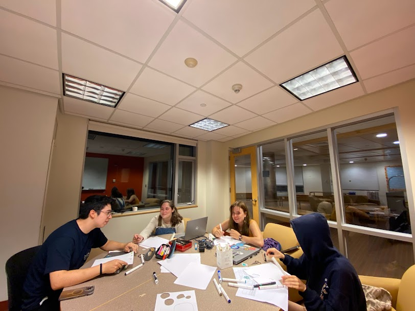

Design Development
Translating our user needs into several plausible responsive designs & evaluating the ways in which designs are actually responsive to user needs.
Our Design
Our design is intended to work to build connection between the users and the natural world. With the hope of combating the statistic that children can name thousands of company logos but less than 10 native plant species. Inspired by pokemon go, iNatuaralist, and acorn land labs we intend to gamify a system of plant identification and tracking in order to strengthen interaction between users and the native plants we hope for them to identify. Our app is intended to be used on digital handheld devices by a wide age range with varying levels of engagement. In the future, we might also add public boards where users can interact with our app in locations, like t-stops. Our Design includes plant identification pages with options to identify plants through images, description, or name. Once these plants have been identified the users` plants are then saved to their logbook which includes relevant information about the plant and link to professional papers and opportunities to participate in citizen science to allow for varying interaction. Plants can then be moved to decorate a personal digital garden. Your garden is populated with plants from your logbook and propagations from your friends. Our app also hosts a settings and profile page where you can list your top five plants, like friends in myspace. While the aspects of the design listed above are considered our MVP, we are still considering adding a map and a community forum. The idea of a community forum has been met with many safety concerns from our user feedback testing. We are choosing to proceed with caution and add elements in sequence rather than parallel.
Interaction Maps
Left: A possible flow of Eliot's use of our app, beginning with Eliot's desire to connect with other plant enthusiasts. This transitions to his use of the app on hikes and on daily walks, and further to his involvement with citizen scientists and a passionate community. However, it's worth mentioning that our design choice to move away from hosting a community forum negatively affects Eliot and limits his options in using our app to find community.
Left: A possible flow of Tatum interactions with our app, Stemming from Tatum`s desire to learn more about native plants and reconnect with nature. This shows how they begin using the app regularly on walks to work and progresses to how the app inspires them to get out into nature more. Our current design goals still very much align with Tatum`s and our interactive garden and log book help them to be driven to continue interaction with our app.
Left: A possible interaction flow between Emma + Mary and our app. Starting with Emma`s desire to encourage Mary`s passion for nature, flowing into their pattern of using the app on walks and on fun nature based outings. In removing the map and community from our app, we helped Emma to feel safer. Letting her daughter interact with the app like this does affect other people, such as Eliot.
How does it work?
Above: A paper prototype of our app. We decided to represent our app with these 6 pages of the app and 4 pop up pages. We made these of paper so they were easy to change and engage with during user testing.
With our refined direction, we decided to make a low-fidelity paper prototype and interaction flow. It began by having users prompted to create an account on a home screen if they choose to do so. We decided to make creating an account optionally as we want a low barrier of entry, if a user choose to make an account they can post on the community board and their data transfers across devices, otherwise their data is locally saved and they can only view posts, We decided to have a community posting as part of our larger user testing in our paper prototype to gather more feedback. A user had a view of a map of their local area highlighting plants that are in their area and where to find them. Our paper prototype included the main idea we intended to pursue is the garden, the user could drag up the bottom of the screen to show a simple menu with all the plants you have found. This allows users to drag them into their garden. If they want to learn more information about a plant in their garden or LogBook they can click and a pop-up will appear with more information including, a scientific drawing and descriptions. To identify a plant a user can take a picture, add it by name, or add it by answering a series of questions along with the picture.
Above: A diagram of the simplest way our app could be. The three light blue boxes represent the 3 main pages. Below each are interactions and subpages you would be able to get to. The pink boxes are features that we talked about and might want to bring back in but are not included in this bare bones model of our app.
User Needs
Our idea meets people’s desire to learn about the world around them in a way that fits into their everyday life. It fits these needs by being a fun and relaxed game where people can learn about the natural world around them by learning to identify native plants. It will be a relaxed game by allowing the user to go at their own speed having a simple interaction style.
Our users also have a desire to connect with people and share that learning. We thought we needed to directly attempt to build community in our app by having a community posting board or something similar, but in talking with people it became clear that our users value in person connection and would rather talk to people around them about what they are doing or something they learned, then post something in the app they were playing with. This really aligns with our persona pair Emma and Mary, as both consider it crucial that Mary has a safe place to learn and play. They want the app to strengthen their interpersonal connection rather than the connection to their community. However, we do recognize that this design decision leads to a trade off with negative effects on users such as Eliot, with his goal of using this app to establish connection with other plant enthusiasts. We hope to still facilitate this goal by linking opportunities for citizen sciences though our app. Users such as Tatum are not as directly affected by this change. In user testing people seemed the most stressed and uncomfortable with the community posting board and they did not see a lot of value in it even if their concerns around safety and privacy were addressed.
Goal of Phase
During this stage of our design process, our primary objective was to engage in collaborative design with our users. We delved into an in-depth exploration of user needs and our strategy for meeting them. Employing low-fidelity prototypes, we carried out co-design sessions that yielded invaluable insights into the usability and functionality of our design.
Process
In this phase we came up with our final idea by brainstorming ideas and features that align with what we learned in the earlier phase through user interviews. We brought paper prototypes into these conversations so that we could focus the user tests, get feedback and ideate with users. We talked to 22 people total about our ideas and used what we learned from those interactions to decide on the design above. In this section we will describe further our process and the other ideas we considered before settling on the one above.
Portfolio of Ideas
Following the completion of our needs analysis phase, we began on the synthesis and brainstorming stage, aiming to generate a variety of different ideas we believed had the potential to cater to our users' requirements. With our personas guiding our efforts, our team convened for an extensive brainstorming session, diligently documenting every idea that surfaced. This step was a great foundation for the next steps in the process.
Above: Our board of Portfolio Ideas
Choosing Three Ideas from Our Portfolio
After our brainstorming sessions we decided to follow up on 3 different ideas we believed could meet user needs. The three ideas we chose were a community posting board, an interactive virtual garden, and a public board. In talking to our users, we realized that most of these ideas fell short in meeting their needs. Each of our three ideas played on three core values of our product: Connection, Education and Reach.
Above: A possible design of an interactive board hosted in a public space, possibly at a T stop, to explore our app’s use and features in a public space.
The public board would be in a busy location, like a T-Stop, meaning it would have large reach. Despite its large reach, we realized that it would not allow for long term use due to its nature. This meant it would not provide the level of education wanted nor allow for deep connection between community members and or nature.
Another idea was an interactive virtual garden. The idea was to gamify plant identification. Users could go out into nature and ID a plant which would add it to their garden which they could decorate and design. We enjoyed this idea as it allowed for a large depth of knowledge while having a larger reach. We believe that this app would also allow for connection as people may play the game with family, friends and meet others who play. We decided to move forward with this app as it connects best with our values.
Our final idea was a community posting board. The idea was a simple app with the focus of asking people to identify what a given plant was or planning events. Despite an app like this ability to foster deep connections and tons of learning resources, we decided that an app like this would not have a large reach for people who did not already have an interest in plants. We moved away from this idea as our main goal was to connect people with nature who would not normally have the ability to. We briefly played around with the idea of having a community page but moved away from it after user testing.
Right: A possible layout of a design for the community forum aspect of our app.
Key Insights
In this phase, we did user testing and refined our design idea with both the teaching team’s input and the data we gathered from our user group. There were several key insights we gathered from undergoing this process, as various parts of the refinement and development process challenged us in unexpected ways.
Above: Team members collaborating to create a calendar to track deadlines for this phase.
While conducting the user interviews, we realized that some of our paper prototypes were provoking more specific feedback than we desired on our design. Some of our users were telling us about the location of the button menus and the layout of settings pages, rather than reviewing the different concepts behind each page and how useful/engaging they would find this product as a whole. After talking this through as a group, we came to the conclusion that, as interview facilitators, we should be more proactive in guiding the testers than we had previously expected to be. Being aloof and withholding input from the process leads to authentic feedback, but at this stage we couldn’t really use input on the positioning of menus. It was an experience that reinforced some of the lessons we had learned in class - being a ‘sportscaster’-type interviewer meant sometimes asking a key guiding question!
In order to gather the most relevant data from user interviews, we came up with a set of guiding questions and desired areas for review that our team could refer back to during testing.
Effort Chart
People in bold did more work on section - but all people listed put work into the VERY IMPORTANT CATEGORY of having fun!

Above: Evidence of the fun :)
| Paper Prototypes | All |
| High Fidelity Paper Protoype | Meagan |
| Report | All |
| Portfolio of Design Ideas | Declan, Meredith, Meagan, Raul, Norah |
| Website | Meredith |
| Figma | All |
| User Testing | Norah, Meagan, Declan, Raul |
| Interaction Map | Declan |